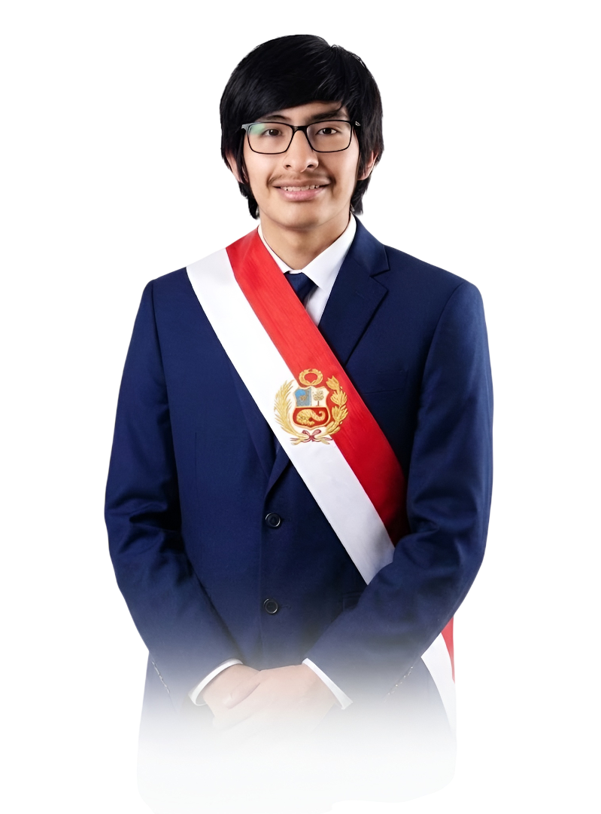

Plancha Presidencial 2026
Cinco peruanos comprometidos con el cambio, la transparencia y el desarrollo del país.

Stiven Freddy Cuentas Ramos
Candidato a la Presidencia Universidad ContinentalLíder con visión de futuro, comprometido con la transparencia y el desarrollo sostenible. Cuenta con experiencia en gestión municipal y coordinación de programas sociales. Su estilo directivo y capacidad de diálogo lo convierten en un candidato que busca tender puentes entre sectores políticos opuestos.

Dudú Lizarzaburu Flores
Ministro de Cultura Universidad Continental - Instituto Superior de Música PúblicaGestor cultural y artista comprometido con la descentralización del arte. Ha trabajado en la promoción de artistas emergentes en regiones del interior del país y en la dirección de festivales culturales. Cree en una política cultural que llegue a cada rincón del Perú, sin elitismo ni exclusión.

Anthony Jareth La Torre Velazco
Ministro de Tecnología Universidad Andina del CuscoIngeniero de sistemas con especialización en transformación digital e inteligencia artificial. Ha liderado equipos de desarrollo en el sector privado y ha sido consultor en proyectos de modernización del Estado. Convencido de que la tecnología debe ser una herramienta de inclusión y desarrollo para todos los peruanos.
Ginny Malena Farfan Carrion
Secretaria de Estado Universidad San Antonio Abad del CuscoProfesional en derecho y ciencias políticas con amplia experiencia en gestión pública. Ha trabajado en la elaboración de políticas de reforma del sistema penitenciario y en programas de reintegración social. Su compromiso con los derechos humanos y la justicia social la convierten en una pieza clave del equipo.
Yajaira Huarcaya Cabrera
Ministra del Interior Universidad Andina del CuscoEspecialista en seguridad ciudadana y políticas de prevención del delito. Ha desarrollado programas de intervención comunitaria para la reducción de la violencia en zonas urbanas. Su enfoque integra la inteligencia policial con la participación ciudadana, buscando una seguridad que proteja a todos los peruanos.